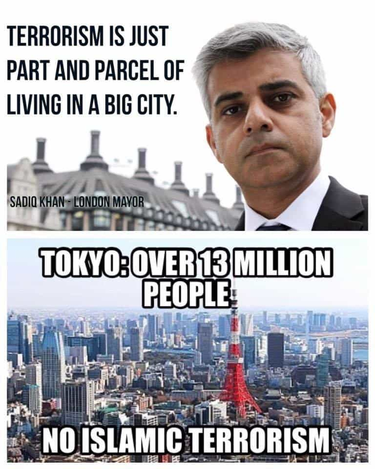

John Carver is a four year ROK veteran with over fifty articles of SJW-triggering truth bombs on archive. You can follow him on Twitter if you are so inclined.


The world’s most prosperous and developed regions, or what we casually refer to as the “first world”, are roughly divided into four key areas of the planet. They are Anglo North America (U.S. & Canada), Australasia (Australia & New Zealand), Europe (though northern Europe in particular), and Northeast Asia (excluding the communist nightmare North Korea).
The northeast Asian cluster of developed nations differs from it’s European, North American, and South Pacific counterparts by being the only highly populous and high-income region of the world which is not predominately inhabited (or founded) by people of Germanic European extraction. Furthermore, these northeast Asian countries are the only advanced parts of the globe (along with Israel) which have absolutely no diversity or multiculturalism agenda being forced upon them.
This article will explore five ways in which the prosperous countries of this region (Japan, South Korea, Taiwan, Hong Kong, and mainland China to a smaller extent) greatly benefit by not having “diversity is our strength” garbage shoved down their throats by the global elite.
Even people of northern European descent are statistically more likely to commit crimes than northeast Asians. The Japanese, Koreans, etc. are therefore WISE to not let us/them permanently migrate to their countries, as it would inevitably upset the very low crime rates they enjoy.
The native inhabitants of northeast Asian nations are arguably the most law-abiding on the planet, aided by having a very high average IQ, a docile temperament to civil authority, and cultures which highly emphasize honor and mutual respect. Japan for instance, is perhaps the most sincere country in the entire world, and famous for various “wallet drop” experiments which yield an amazingly high chance of having your property returned with all cash in it’s proper place. (Good luck with that in Africa or Latin America).
Furthermore, all major cities in Taiwan, South Korea, Japan, and Hong Kong are like toy towns. They have absolutely fantastic and far-reaching metro systems, and overall safety levels so high you can literally (Hitler) throw a dart at anywhere on the city map, go to that area at two in the morning, and absolutely nothing is going to happen to you.
Why in the hell would these super safe and honorable cultures want to embrace and “celebrate” diversity and multiculturalism? Bringing in distant foreigners, who are routinely lower IQ and prone to higher rates of crime and degeneracy (yup, white people included!), would not only be outright foolish, it would be completely anti-humanist in regards to the well-being of the native citizens.
We fight as a single, inpenetrable unit.
DiversityThat is the source of our strength. – Leonidas, King of Sparta (300)
In the later decades of the 20th century, the comparatively small island nation of Japan became the world’s second largest economy and a technological powerhouse, and ethnic and cultural “diversity” had nothing to do with their massive success. Mainland China has also really been able to spread it’s wings now in the 21st century, and they couldn’t have done it without the aid of racial diversity and free-for-all Islamic immigration (not).
And how about the business environment of South Korea? It’s Samsung Corporation has enjoyed phenomenal global power and success with it’s various consumer electronics, while it’s Seoul headquarters is 99% ethnic Korean. So considering the great success of these monocultures, can ethnic and cultural diversity really be considered a source of “strength” as the West regurgitates, or rather a source of friction and discord?
A Korean family looking at moving within Daegu. They do not need to research “bad neighborhoods” like Americans do, because everywhere will be inhabited by the same low-crime prone people with the same ethnic heritage, language, culture, and values as them.
The awful truth is that diversity has no inherent strengths. At face value it’s merely neutral at best, while it can only be a potential catalyst for major societal issues/weaknesses. In fact, study after study shows that ethnic and cultural diversity leads to a lack of social trust and community cohesion. Additionally, most people around the world demonstrate a clear preference for ‘homophily’, which is the tendency of people to prefer the company of others who are most like themselves when entirely left to their own devices.
One of the reasons the countries of northeast Asia are so successful is that they have great social trust and cohesion, aided primarily because everyone shares the same ethnic heritage, speaks the same language, and shares the same culture, values, and traditions.
On the other hand, the rampant multiculturalism occurring in North America, Europe, and Australasia is leading to increasing social strife and discord, sometimes culminating in instances of mass violence. Even Roosh has done a video which demonstrates the folly of multiculturalism.
A Japanese boardroom embracing the only “diversity” that actually matters. Diversity of portfolios, investments, ideas, and RESULTS.
All over the Western world, corporations and media organizations spend untold amounts of time and money telling everyone about how wonderful diversity is. Meanwhile, the non-diverse nations of northeast Asia can just… sort of carry on with their valuable time and keep making money.
When there is next to no diversity, there is no inherent need to even acknowledge it’s existence. This is why countries like Japan, South Korea, and Taiwan don’t have to waste time with such asinine things like “sensitivity awareness” or “diversity training” within their corporate working environments.
Australia Post unleashing the same virtue signaling SJW Diarrhea we’ve come to expect from this formerly great country. Japan, Korea, and Taiwan don’t even have to bother with eye rolling time wasters like this.
And it’s not just the private sector, multiculturalism and diversity are major time and money drains within the government realm as well. Having to translate documents into over half a dozen languages (ever been to a California DMV?) and the amount of resources spent on refugee welfare programs could be better utilized trying to get everyone to assimilate as quickly as possible. Northeast Asian countries simply don’t have any of these problems, because they wisely chose to opt out of the diversity shtick.

If you don’t have followers of Islam in your midst, then you won’t have Islamic terrorism. It’s really that simple. Somehow the current Muslim mayor of hyper-multicultural London did not get that memo, and instead tried to save the face of his religion (and SJW mindset) by saying that terrorism is just “part and parcel of living in a big city”.
Meanwhile, Tokyo is the largest metropolitan area in the world and they have absolutely no Islamic terrorism. Because the religion of Islam is not there, other than the most token of numbers. Other cities in northeast Asia like Osaka, Seoul, Busan, Shanghai, Taipei, Sapporo, Kaohsiung, etc. don’t have any problems with Islamic terrorism either for the same reasons.
By comparison, just a little further abroad in southeast Asia, Islam is nothing but a source of friction or even outright violence in the countries where it has a large footing. Muslim-majority Malaysia imposes various levels of economic and civil discrimination towards non-believers, Muslim-majority Indonesia has suffered bombing attacks, and the Philippine island of Mendanao has been engaged in an ongoing conflict that is Islamic in origin.
As Black Pigeon Speaks has pointed out, wherever there is Islam and the other, there is always conflict. The nations of northeast Asia would be wise beyond measure to make sure that the religion of Islam does not ever gain any significant foothold in their territory.
Western tourists in Taipei. Unlike modern London or Paris, their chances of getting robbed/conned by Africans or stabbed to death in an Islamic whack job is pretty much zero.
Northeast Asia’s fantastic natural human capital (high IQ, low crime, hard-working, non-belligerent people) along with the regions lack of cultural diversity tends to work wonders on their domestic tourist industries. Other than the relatively high costs of the region (especially Japan), visitors to these countries tend to express very high levels of satisfaction with their experience.
Tourists routinely give praise to the high perceptions of personal safety, lack of street harassment and scams by unwanted foreigners (unlike many modern cities in Europe), and appreciation for the regions unique cultures. Unique cultures which, unlike the West, are not being tainted with such a degree of forced multiculturalism and degeneracy that many native inhabitants no longer even recognize their own countries.
Safe and satisfied tourists equals great word of mouth and even repeat visits, which are things that “diversity is our strength” countries like Brazil and South Africa routinely miss out on, as those nations have much poorer reputations for personal safety. Tourist numbers to formerly picturesque cities like London and Paris have also been hit hard in recent times, as the recent spate of terrorist attacks is driving away outside spenders.
Besides having more “food options,” the facts show there is no logical benefit to diversity, and countries that are not diverse would be wise to keep things that way. While Japan, Korea, and Taiwan will still be ethnically and culturally Japanese, Korean, and Chinese at mid-century, it is a complete Pandora’s Box as to how much Europe, North America, and Australasia will change for the worse.
Read Next: Only White Countries Are Expected To Let In Hordes Of Illegal Migrants